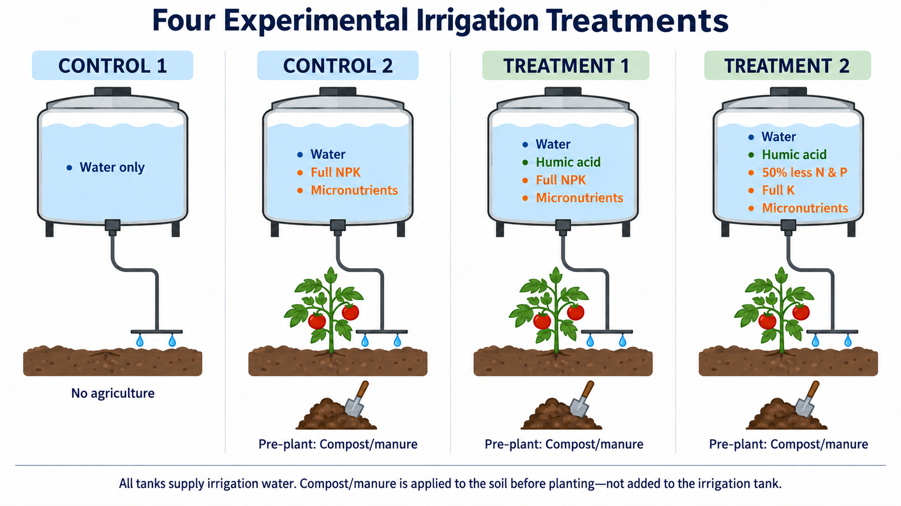
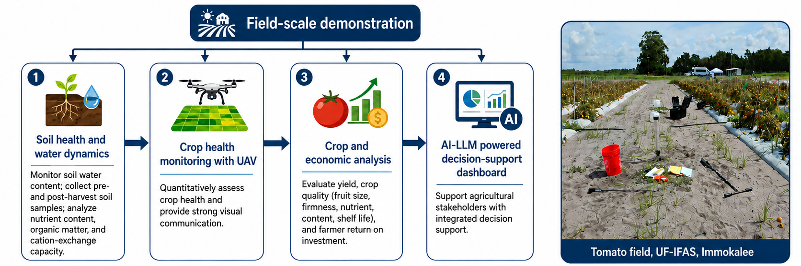
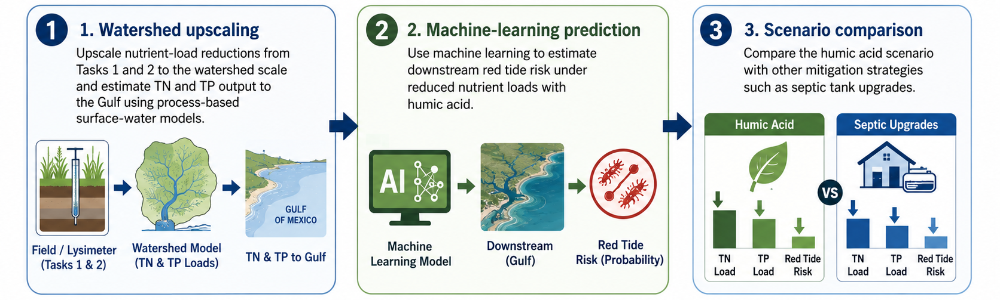

Research Program#
The research is designed as one connected scale-up experiment. Evidence is first measured under controlled field conditions, then tested under production-scale conditions, and finally translated to watershed and coastal consequences.
Research pathway#
1. Lysimeter scale
Measure the mechanism
↓
2. Field scale
Validate in production
↓
3. Watershed & coast
Scale the environmental impact
Research logic: Measure nutrient retention and leaching → validate agronomic and water-quality performance → estimate watershed nutrient reduction and red-tide response.
Task 1 — Lysimeter Scale#

Measure the mechanism#
Research question:
Can humic acid reduce nitrogen and phosphorus movement below the tomato root zone while supporting crop production?
Research process:
Four treatments → Suction-plate leachate + soil sensors → Nutrient-loss comparison
Three replicates are used for a background control, conventional 100% fertilizer, HA with 100% fertilizer, and HA with 50% fertilizer. Leachate chemistry is interpreted together with soil-water conditions, rainfall, irrigation, and crop response to quantify how HA changes nutrient retention and leaching.
Core evidence:
TN & TP • nitrate/nitrite • ammonia • soluble reactive phosphorus • soil water • drainage • crop response
Task 2 — Field Scale#

Validate in production#
Research question:
Does the nutrient-reduction strategy remain effective under field-scale tomato production while maintaining crop performance and economic feasibility?
Research process:
Conventional practice ↔ HA + reduced nutrients → Water + crop + economic response
The field experiment at UF/IFAS compares standard nutrient management with HA under reduced nutrient input. Soil and shallow-groundwater observations are combined with UAV hyperspectral imagery, tomato yield and fruit-quality measurements, and farm-level economic analysis.
Core evidence:
soil condition • shallow groundwater • UAV crop health • yield & quality • fertilizer savings • return on investment
Task 3 — Watershed & Coast#

Scale the environmental impact#
Research question:
If measured nutrient losses decline at the lysimeter and field scales, what could broader adoption mean for Peace River nutrient loads and downstream red-tide risk?
Research chain:
3a. WAM watershed scenarios → 3b. K. brevis machine learning → 3c. AI/LLM decision support
Qualified results from Tasks 1 and 2 are used to represent HA adoption in the Peace River Watershed Assessment Model. Resulting nutrient-load scenarios are then evaluated with the existing red-tide machine-learning framework, while the decision-support component translates the combined agronomic, economic, watershed, and coastal information into practical guidance.
Core evidence:
TN & TP load change • sensitivity & uncertainty • bloom probability/frequency/severity • stakeholder-ready guidance
Integrated Research Connection#
Research scale |
Main question |
|---|---|
Task 1 — Lysimeter |
What changes in the root zone? |
Task 2 — Field |
Does it work at farm scale? |
Task 3 — Watershed & Coast |
What does it mean for the watershed and coast? |
Task 1 → Task 2 → Task 3